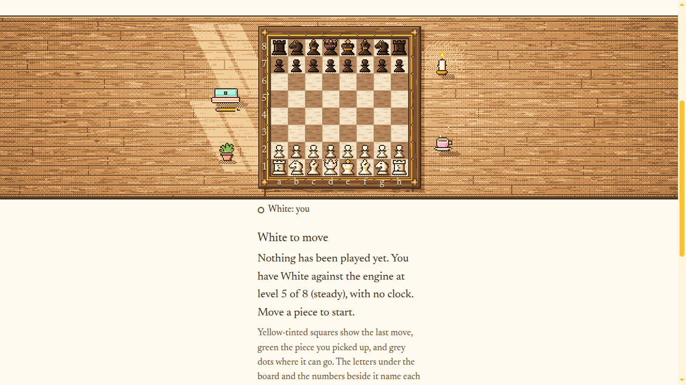

How a program picks a move
By the end you can trace a two-move lookahead by hand and say which move it picks.
Your friend always beats you at noughts and crosses. They aren't smarter. They look one move further than you.
Four words
- Position: the board right now.
- Move: one change to the board.
- Tree: every position you can reach, move by move.
- Score: how good a position is for us.
You need: trees from last week (root, children, leaves).
Pick the move that looks best now
Score each move by the board it leaves. Take the highest.
It takes a free piece, and loses the game on your reply.
Look at the reply too
- For each of my moves, list your replies.
- Score the board after each reply.
- You will pick the reply that is worst for me: take the minimum.
- I pick the move whose minimum is highest: take the maximum.
Two moves, two replies each
me: A B
you: A1 A2 B1 B2
score: +3 -9 +1 +2
A: you reply A2. Worth -9.
B: you reply B1. Worth +1.
Pick B. A has the best leaf, but you would never let me reach it.
What does it pick?
me: A B C
you: A1 A2 B1 B2 C1 C2
score: +4 +4 +8 -1 +2 +3
A. Its minimum is +4; B's is -1 and C's is +2.

This engine looks five or more moves ahead. Play one move and watch its reply.
Same idea, new place
A delivery robot picks a route. Then the traffic "replies" with the worst jam it could. Which route should it take?
The route whose worst case is best: minimax again, against the traffic.
Your friend wasn't smarter. They were taking the minimum, then the maximum.